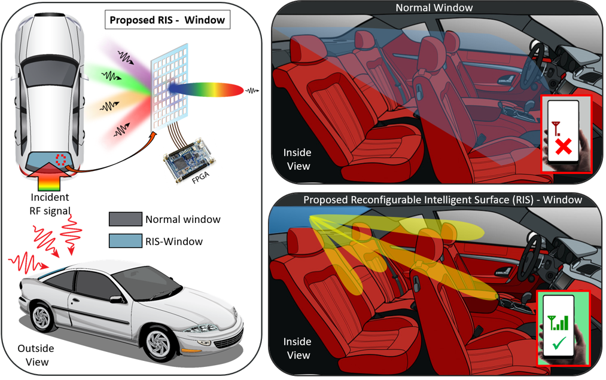
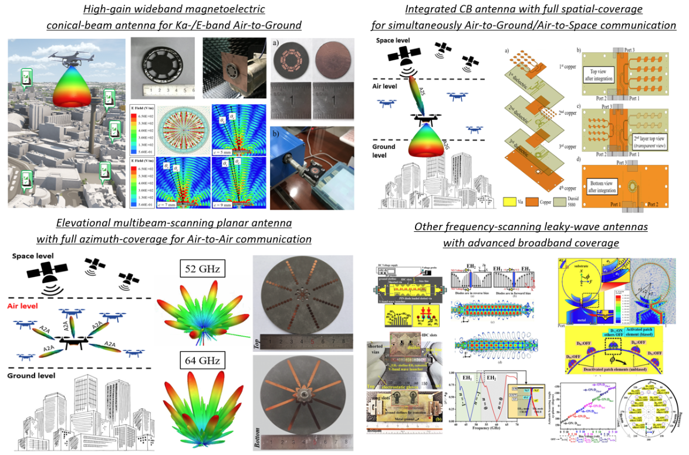

Research Interests
At EMAGINE, we advance the frontiers of applied electromagnetics to enable the next generation of intelligent, secure, and trustworthy wireless systems. Our research bridges fundamental electromagnetic theory with cutting-edge engineering to address emerging challenges in antennas, RF systems, wireless communications, sensing, artificial intelligence, and hardware cybersecurity.
Our research is centered around two complementary themes. The first focuses on developing high-performance electromagnetic and RF systems that improve efficiency, reconfigurability, adaptability, and intelligence for future wireless and cyber-physical applications. The second investigates hardware-based cybersecurity for wireless infrastructures, where intrinsic electromagnetic and RF characteristics are leveraged to establish secure device authentication and resilient physical-layer protection against increasingly sophisticated cyber threats.
Reconfigurable Intelligent Surface (RIS)
We design programmable, multifunctional, and intelligent electromagnetic surfaces that can reshape wireless propagation environments for future 6G communications, sensing, and secure cyber-physical systems.

Radio-Frequency Hardware Cybersecurity
We investigate intrinsic electromagnetic entropy, RF fingerprints, physical unclonable functions, and hardware-level authentication methods for countering spoofing and strengthening trustworthy wireless infrastructures.

Millimeter-Wave Aerodynamic Antenna for Non-Terrestrial Networks
We develop high-performance and reconfigurable millimeter-wave antennas for aerial, space-air-ground, and non-terrestrial wireless networks, with emphasis on conical coverage, full spatial coverage, wide scanning, low-profile integration, and platform-aware aerodynamic form factors.

Microwave and Millimeter-Wave Radio-Frequency (RF) Sensors
We create passive, wireless, chipless, and battery-free RF sensing platforms, including kirigami-inspired strain sensors, crack-detection sensors, intermodulation-based antenna sensors, and RFID-enabled biomedical/wearable sensors for intelligent monitoring and secure interaction with physical environments.